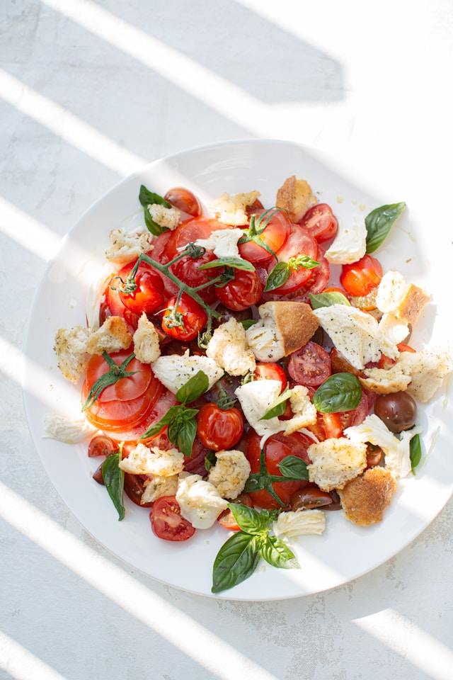

Quick and fresh salad

Fresh, Delicious and Healthy Salad in 5 minutes
Ingredients
- Tomatoes
- Cucumbers
- Parsley
- Salt, Pepper and Olive oil
Steps
- Chop your tomatoes into pieces not bigger than an olive
-
Slice your cucumbers into 2 long pieces and then into small halves
-
Season according to your taste, add the parsley in the end and mix well
- Enjoy an easy, healthy and most of all light meal
Back to Home Page